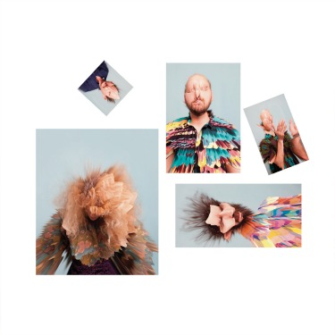
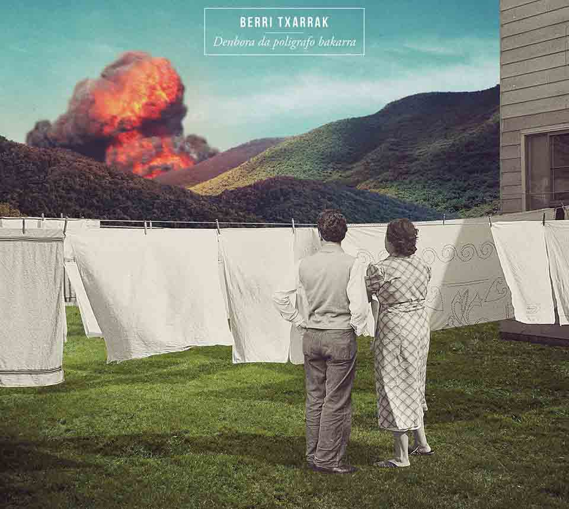
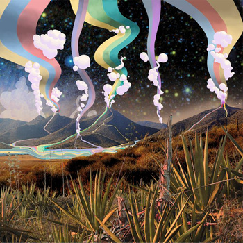
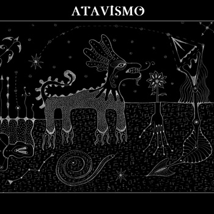
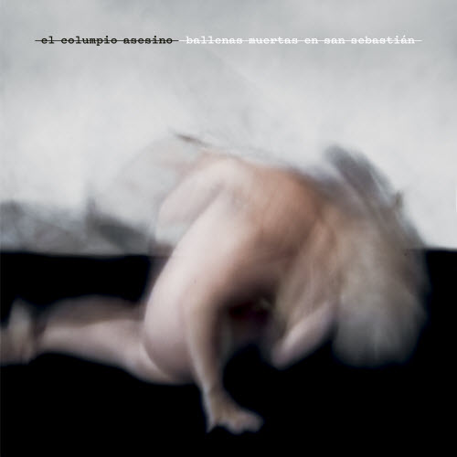

Después de haber publicado nuestro Top Internacional en dos partes (1º parte del 30 al 11 / 2º parte del 10 al 1), nos centraremos ahora en los 16 mejores trabajos de 2014 en el ámbito nacional.
—
16. Los Punsetes – LPIV
|  | Los Punsetes parece que le han quitado una sílaba a su nombre. Tanto, tanto han resumido su propuesta. Las letras concentran más que nunca todo lo bochornoso y apaleable propio del ser humano. La sección rítmica está casi enterrada en la mezcla. Las melodías, apiñadas y muy juntitas salvo por ciertos adornos. Y el sentimiento de ser el rompeolas ante un tsunami de patetismo: ese, ese sigue intacto. |
{kind=link}
—
15. Cuchillo de Fuego – Triple España
 | Los Cuchillo de Fuego tienen un corazón que no les cabe en el puto pecho. Tienen rabia y gracia y las saben conjugar para dar un repaso tragicómico a nuestra querida España. Tienen ese arrebato urbanita de escribir poesía existencialista que nos da a algunos a los treinta. Y sobretodo no usan brocha gorda en sus figuras retóricas, cosa que agradezco. ¿La nostalgia? Me da igual. |
—
14. Sacco – Sacco
{kind=link}
—
13. The Soulbreaker Company – Graceless
 | Si bien era muy difícil superar el gran Itaca, los alaveses vuelven a entrar con su último disco en el top nacional. Lo suyo se basa en una calidad intrínseca, y marcan la diferencia con una chispa que parece siempre asegurada, da igual que tiren hacia el rock progresivo, hacia el rock clásico más sesentero, o experimentando con nuevos elementos, como ha ocurrido con el fresco Graceless. Leer reseña |
—
12. Viva Belgrado – Flores, Carne
{kind=link}
—
11. Berri Txarrak – Denbora Da Poligrafo Bakarra
|  | Los de Lekumberri llevan una carrera que es todo un garrote: 20 años de vida y ni un trabajo con fisuras. En su último disco el grupo ha querido sorprendernos y ha compuesto un tratado en 3 piezas, cada una grabada con un productor distinto y orientada hacia un género distinto, a saber: metal, punk y pop. En los dos primeros el savoire faire estaba asegurado, y en el tercero, el grupo ha demostrado que se mueve como pez en el agua con temas que dejan por tierra a la mitad del indie nacional. |
{kind=link}
—
10. El Páramo – El Páramo
|  | Si el stoner instrumental sigue teniendo vigencia seguramente sea por grupos como El Páramo. Su segundo disco homónimo empieza a crecer en el primer riff y no para de hacerlo hasta la última nota. Si en 2014 hemos puesto el volumen a 11, ha sido en parte gracias a canciones como Don Pedro. |
{kind=link}
—
9. Silvia Pérez & Raúl Fernández Miró – Granada
 | Silvia Pérez Cruz, simple y llanamente, eleva el listón de la interpretación en todas las canciones que versionea. Aquí si que pienso decir que os estáis perdiendo algo mágico. El acompañamiento de Raúl Fernández Miró sabe leer entre líneas y otorga el matiz minimalista necesario que no tape la labor de esta gran mujer. |
—
8. Accidente – Amistad Y Rebelión
 | El disco más temprano de 2014 también ha sido uno de los mejores a nivel nacional. Hardcore aceleradísimo que convive estupendamente con melodías pop pegadizas y letras combativas. Una maravilla que se deja escuchar ahora igual o mejor que hace un año. Leer reseña |
—
7. Atavismo – Desintegración
|  | El primer trabajo de Poti, Sandri y Mat (exmiembros de Viaje a 800 y Mind!) ha sido todo un golpe en la mesa de fin de año en clave lisérgica y trascendente. Quién diría que estos chicos son gaditanos porque parece que lo que hayan mamado de pequeños sea el blues más pasado de rosca y el rock psicodélico de Palm Dessert. Leer reseña |
{kind=link}
—
6. El Columpio Asesino – Ballenas Muertas En San Sebastián
|  | El Columpio Asesino sigue la senda iniciada en Diamantes, haciendo malabares entre su nueva vena bailable y la pochez de siempre con erótico resultado. Los sintetizadores van ganando cada vez más importancia en su sonido (y brindamos por ello), pero todas sus señas de identidad permanecen intactas, incluidas sus desasosegantes letras. Un ejemplo de cómo abrir el sonido de una banda sin prostituir su legado. |
{kind=link}
—
5. Antiguo Régimen – Política De Tierra Quemada
 | Los de Valencia presentaron este año un debut que llegó con más elegancia que ir de gafas de sol a tu propio entierro, y que los ha erigido como una de las referencias infaltables del revival post-punk de los últimos tiempos. Melodías siniestras sobre un innegable trasfondo pop y varios de los temas más pegadizos que hemos escuchado este año es lo que podrás encontrar en este fantástico Política de Tierra Quemada. |
—
4. Horn Of The Rhino – Summoning Deliverance
 | Varios en el staff podemos decir con la cabeza bien alta que de las mejores cosas de metal que se han hecho este año proceden de dentro de nuestras fronteras. El trío de Bilbao ha firmado otro disco monolítico y robusto, cargado de riffs gordos y nuevos elementos de inspiración black-metal y con Javier Gálvez reafirmándose como mejor vocalista del estado. Que su target sea ya internacional no es ninguna sorpresa. |
—
3. Teitanblood – Death
 | En su día os contamos las bondades (leer reseña) de este machacante monumento al Maligno y ahora, cuando las cartas ya están todas sobre la mesa, nos consta que la segunda obra de los madrileños Teitanblood es hasta el disco del año de algún redactor. Desde luego no ha habido otro álbum este 2014 que nos haya hecho sentir tan sucios por dentro, pregunten si no a nuestro confesor habitual. |
—
2. Cuello – Modo Eterno
 | Aunque su Modo Eterno salió en abril todavía sigue su recuerdo ardiendo muy fuerte en nuestros corazones. Si tuviésemos una redacción en SuicideByStar seguramente sería el disco que pondríamos el viernes antes de salir entre pogos, cerveza vertida en el suelo y bailes ridículos. Rock y punk directo, divertido y muy muy fresco. |
—
1. Biznaga – Centro Dramático Nacional
 | ¿Por qué iban a recordar a alguien en 2014 a Eskorbuto o a Parálisis Permanente? Pues para sacar el mejor disco nacional del año, por ejemplo. No es sólo su buen gusto a la hora de elegir referentes, es la capacidad de sacar lo mejor de nuestras miserias y fracasos como sociedad. |
Apoyános